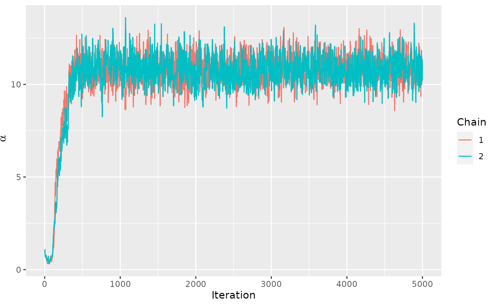
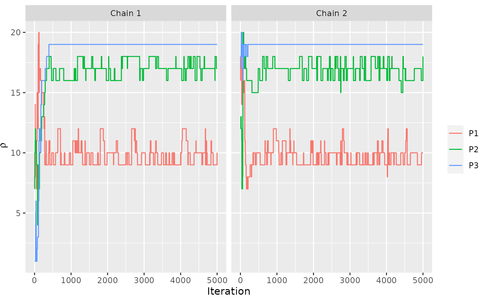
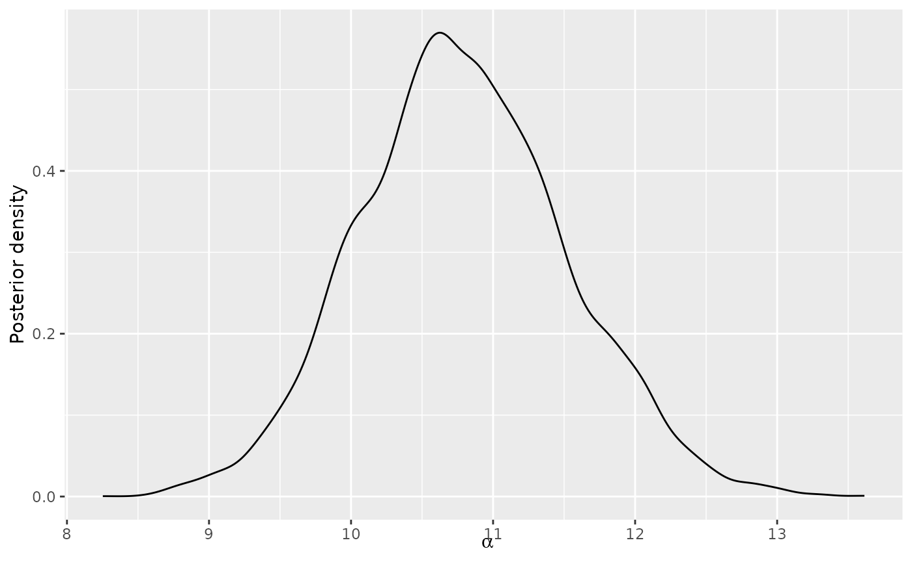
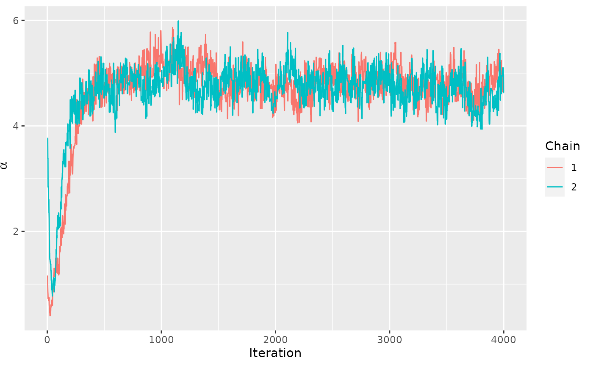
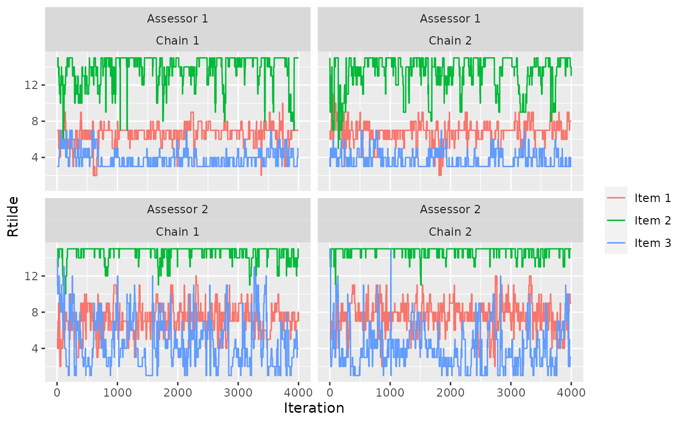
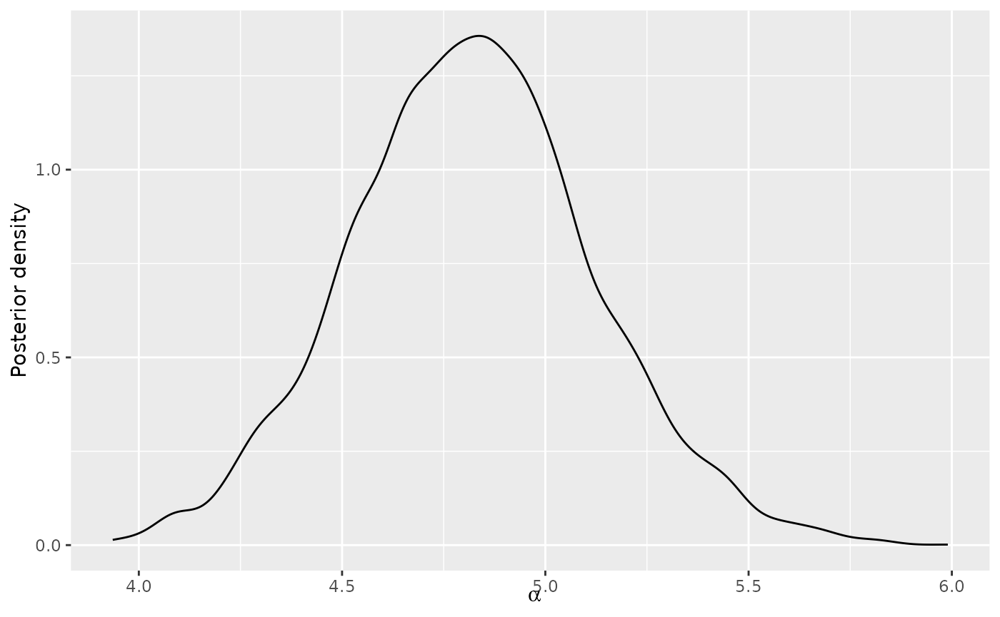
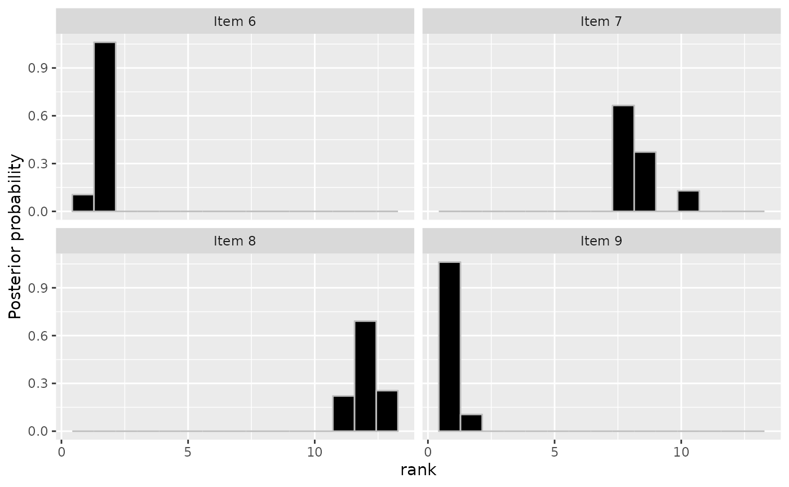
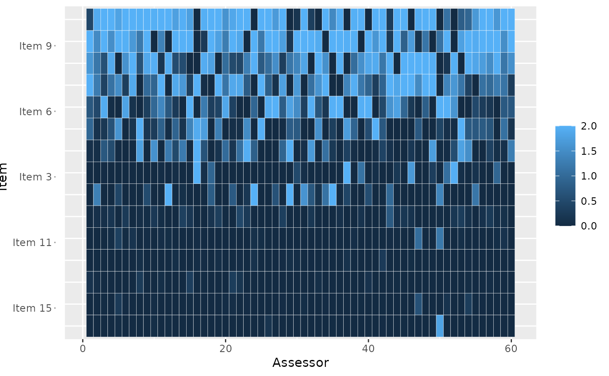

This vignette describes how to run Markov chain Monte Carlo with parallel chains. For an introduction to the “BayesMallows” package, please see Sørensen et al. (2020).
Why Parallel Chains?
Modern computers have multiple cores, and on computing clusters one can get access to hundreds of cores easily. By running Markov Chains in parallel on \(K\) cores, ideally from different starting points, we achieve at least the following:
The time you have to wait to get the required number of post-burnin samples scales like \(1/K\).
You can check convergence by comparing chains.
Parallel Chains with Complete Rankings
In “BayesMallows” we use the “parallel” package for parallel
computation. Parallelization is obtained by starting a cluster and
providing it as an argument. Since the limit to parallelism for
vignettes being built on CRAN is 2, we here start a cluster spanning two
cores, but in real applications this number should typically be larger
(the output from parallel::detectCores() can be a good
guide). Note that we also give one initial value of the dispersion
parameter \(\alpha\) to each chain.
library(parallel)
cl <- makeCluster(2)
fit <- compute_mallows(
rankings = potato_visual, nmc = 5000,
cl = cl
)
stopCluster(cl)We can assess convergence in the usual way:
assess_convergence(fit)
We can also assess convergence for the latent ranks \(\boldsymbol{\rho}\). Since the initial value of \(\boldsymbol{\rho}\) is sampled uniformly, the two chains automatically get different initial values.
assess_convergence(fit, parameter = "rho", items = 1:3)
Based on the convergence plots, we set the burnin to 700.
fit$burnin <- 700We can now use all the tools for assessing the posterior distributions as usual. The post-burnin samples for all parallel chains are simply combined, as they should be.
Below is a plot of the posterior distribution of \(\alpha\).
plot(fit)
Next is a plot of the posterior distribution of \(\boldsymbol{\rho}\).
plot(fit, parameter = "rho", items = 4:7)Parallel Chains with Pairwise Preferences
A case where parallel chains might be more strongly needed is with incomplete data, e.g., arising from pairwise preferences. In this case the MCMC algorithm needs to perform data augmentation, which tends to be both slow and sticky. We illustrate this with the beach preference data, again referring to Sørensen et al. (2020) for a more thorough introduction to the aspects not directly related to parallelism.
We start by generating the transitive closure:
beach_tc <- generate_transitive_closure(beach_preferences)Next we run two parallel chains, letting the package generate random initial rankings, but again providing a vector of initial values for \(\alpha\).
cl <- makeCluster(2)
fit <- compute_mallows(
preferences = beach_tc, nmc = 4000,
alpha_init = runif(2, 1, 4),
save_aug = TRUE, cl = cl
)
#> Generating initial ranking.
stopCluster(cl)Trace Plots
The convergence plots shows some long-range autocorrelation, but otherwise it seems to mix relatively well.
assess_convergence(fit)
Here is the convergence plot for \(\boldsymbol{\rho}\):
assess_convergence(fit, parameter = "rho", items = 4:6)To avoid overplotting, it’s a good idea to pick a low number of assessors and chains. We here look at items 1-3 of assessors 1 and 2.
assess_convergence(fit,
parameter = "Rtilde",
items = 1:3, assessors = 1:2
)
Posterior Quantities
Based on the trace plots, the chains seem to be mixing well. We set the burnin to 700 again.
fit$burnin <- 700We can now study the posterior distributions. Here is the posterior
for \(\alpha\). Note that by increasing
the nmc argument to compute_mallows above, the
density would appear smoother. In this vignette we have kept it low to
reduce the run time.
plot(fit)
We can also look at the posterior for \(\boldsymbol{\rho}\).
plot(fit, parameter = "rho", items = 6:9)
We can also compute posterior intervals in the usual way:
compute_posterior_intervals(fit, parameter = "alpha")
#> parameter mean median conf_level hpdi central_interval
#> 1 alpha 4.808 4.801 95 % [4.258,5.376] [4.265,5.389]
compute_posterior_intervals(fit, parameter = "rho")
#> item parameter mean median conf_level hpdi central_interval
#> 1 Item 1 rho 7 7 95 % [6,7] [6,7]
#> 2 Item 2 rho 15 15 95 % [15] [15]
#> 3 Item 3 rho 3 3 95 % [3,4] [3,4]
#> 4 Item 4 rho 12 12 95 % [11,13] [11,13]
#> 5 Item 5 rho 9 8 95 % [8,10] [8,10]
#> 6 Item 6 rho 2 2 95 % [1,2] [1,2]
#> 7 Item 7 rho 9 9 95 % [8,10] [8,10]
#> 8 Item 8 rho 12 11 95 % [11,13] [11,13]
#> 9 Item 9 rho 1 1 95 % [1,2] [1,2]
#> 10 Item 10 rho 6 6 95 % [6,7] [6,7]
#> 11 Item 11 rho 4 4 95 % [3,5] [3,5]
#> 12 Item 12 rho 13 13 95 % [12,14] [12,14]
#> 13 Item 13 rho 9 10 95 % [8,10] [8,10]
#> 14 Item 14 rho 14 14 95 % [12,14] [12,14]
#> 15 Item 15 rho 5 5 95 % [4,5] [4,5]And we can compute the consensus ranking:
compute_consensus(fit)
#> ranking item cumprob
#> 1 1 Item 9 0.9151515
#> 2 2 Item 6 1.0000000
#> 3 3 Item 3 0.5810606
#> 4 4 Item 11 0.9239394
#> 5 5 Item 15 0.9887879
#> 6 6 Item 10 0.8903030
#> 7 7 Item 1 1.0000000
#> 8 8 Item 5 0.5977273
#> 9 9 Item 7 0.6971212
#> 10 10 Item 13 1.0000000
#> 11 11 Item 8 0.6245455
#> 12 12 Item 4 0.6645455
#> 13 13 Item 12 0.7392424
#> 14 14 Item 14 1.0000000
#> 15 15 Item 2 1.0000000
compute_consensus(fit, type = "MAP")
#> map_ranking item probability
#> 1 1 Item 9 0.130303
#> 2 2 Item 6 0.130303
#> 3 3 Item 3 0.130303
#> 4 4 Item 11 0.130303
#> 5 5 Item 15 0.130303
#> 6 6 Item 10 0.130303
#> 7 7 Item 1 0.130303
#> 8 8 Item 7 0.130303
#> 9 9 Item 13 0.130303
#> 10 10 Item 5 0.130303
#> 11 11 Item 8 0.130303
#> 12 12 Item 12 0.130303
#> 13 13 Item 4 0.130303
#> 14 14 Item 14 0.130303
#> 15 15 Item 2 0.130303We can compute the probability of being top-\(k\), here for \(k=4\):
plot_top_k(fit, k = 4)